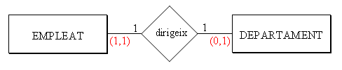
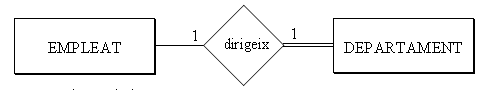
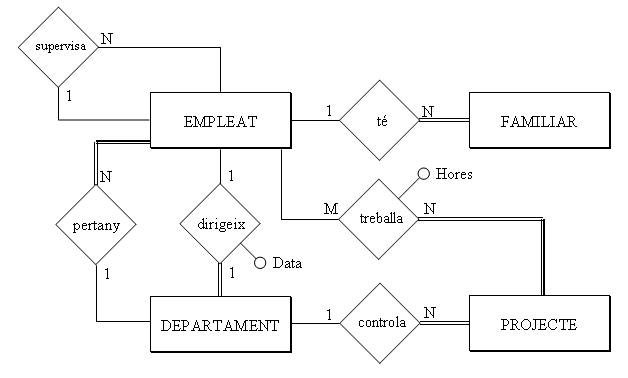
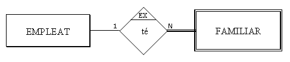
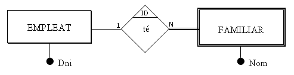
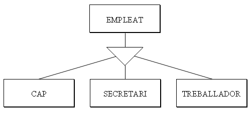
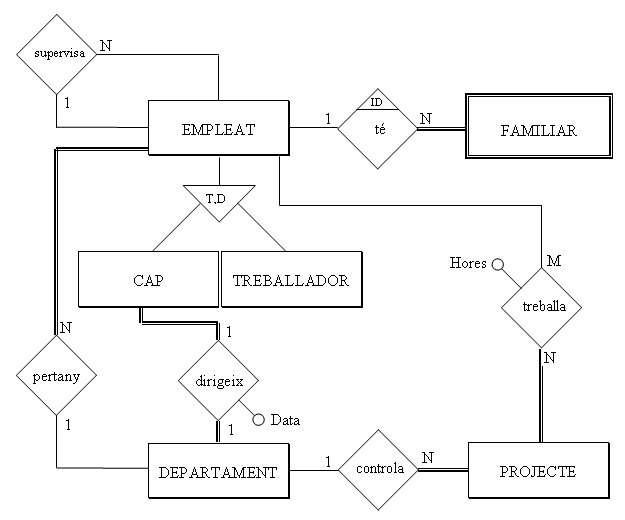

6. Modelo E/R Extendido
Lo que hemos visto hasta ahora proporciona una herramienta para describir la realidad muy potente. Pero todavía hay restricciones del mundo real que no podemos representar.
Por ejemplo, de la entidad FAMILIAR no nos interesan todos los familiares del mundo, únicamente los familiares de los empleados. Es más, si un empleado deja de trabajar en la empresa, ya no nos interesan sus familiares.
O otro ejemplo, hemos puesto que la relación DIRIGE es 1:1, y esto nos podría hacer pensar que las dos entidades, EMPLEADO y DEPARTAMENTO, participan exactamente de la misma manera en la relación. Pero no es exactamente así, ya que todo departamento tendrá un empleado que lo dirige, pero no todo empleado tiene un departamento a dirigir.
Esto hace que el Modelo E/R se haya desarrollado con las aportaciones de más autores, hasta llegar al MODELO ENTIDAD-RELACIÓN EXTENDIDO.
6.1 Cardinalidad máxima y mínima. Participación total.
CARDINALIDAD MÁXIMA y MÍNIMA de una entidad que participa en una relación, son respectivamente el número máximo y mínimo de ocurrencias de esta entidad que están relacionadas con una ocurrencia de la otra entidad

Por ejemplo
Un empleado puede dirigir 0 o 1 departamento, y un departamento es dirigido (como mínimo y como máximo) por 1 empleado. Lo pondremos entre paréntesis (card. mínima, card. máxima) al lado de la entidad. En realidad el nuevo concepto es la cardinalidad mínima, ya que la máxima es la cardinalidad de antes. Los valores habituales de cardinalidad mínima son 0 y 1.
PARTICIPACIÓN TOTAL O PARCIAL
Una entidad participa de forma TOTAL en una relación, si todas sus ocurrencias participan en alguna ocurrencia de la relación. Así DEPARTAMENTO participa de forma total, ya que todo departamento tiene un jefe. En cambio EMPLEADO no participa de forma total, ya que no todo empleado dirige un departamento. Las entidades que participan de forma total tienen de cardinalidad mínima 1. Las que no 0. Por tanto con la participación total o parcial conseguimos lo mismo que con la cardinalidad mínima.
Representaremos que una entidad participa de forma total en una relación con una doble raya

Como de las dos maneras anteriores, la cardinalidad mínima y la participación total o parcial, conseguimos exactamente lo mismo, en estos apuntes solo representaremos la participación total o parcial, ya que tiene una representación gráfica muy sencilla.
[1] Hay autores que las ponen al revés, en las otras entidades.
Aplicación al ejemplo
Aplicando la participación total y parcial, nuestro ejemplo quedará:

6.2 Entidades débiles
No todas las entidades son iguales. En las normales, que llamaremos REGULARES, las ocurrencias tienen existencia propia.
En cambio, en las entidades DÉBILES, la existencia de las ocurrencias depende de la existencia de la ocurrencia de otra entidad, y así si desaparece esta última, deberían desaparecer también todas aquellas.
Por ejemplo los familiares de Juan Pérez podrían ser [Marta, mujer], [Isabel, hija] y [Marcos, hijo]. Si desaparece el empleado Juan Pérez deberían desaparecer también sus familiares.
Las entidades débiles las representaremos por un doble rectángulo:

La cardinalidad mínima y máxima de la entidad regular en la relación con la débil siempre es (1,1). O lo que es lo mismo, la débil siempre participa de forma total en la relación 1:N.
Tal como hemos comentado las cosas hasta ahora diremos que la entidad débil tiene una DEPENDENCIA EN EXISTENCIA[1].
Pero podemos ir más allá, si además de la dependencia en existencia consideramos que para identificar una ocurrencia de la entidad débil nos hace falta la clave de la entidad regular de la cual depende. Si en una biblioteca tenemos más de un ejemplar de cada libro, tendríamos la entidad LIBRO (donde estaría toda la información: título, autor, editorial, ...) y otra que sería EJEMPLAR. Será lógico que para identificar un determinado ejemplar utilicemos el código del libro más el número de ejemplar.
Otro ejemplo podría ser el de PROVINCIAS y MUNICIPIOS. El código de la provincia consta de 2 cifras (Castellón es el 12). Para identificar un municipio se utilizan las 2 cifras del código de la provincia y 4 más para el municipio. Y hace falta el código de la provincia, porque si no se repetirían.
Esta dependencia, aún más restrictiva que la de existencia, la llamaremos DEPENDENCIA EN IDENTIFICACIÓN. Para marcar esta dependencia pondremos ID al lado de la relación.
En nuestro ejemplo, si consideramos que para identificar la entidad FAMILIAR es suficiente con el atributo Nombre, será en existencia (el caso de una compañía pequeña). Si consideramos que no es suficiente, será en identificación y la clave principal será el DNI del empleado más el Nombre del familiar.
Representaremos la dependencia en existencia así (si consideramos que con el nombre del familiar tenemos bastante para identificar):

Y la dependencia en identificación así (si consideramos que también hace falta el identificador del empleado, que es el DNI):

Representaremos esta última de forma alternativa con el rombo de doble raya

[1] En la práctica podríamos pensar que toda entidad que participa de forma total en una relación es débil como mínimo en existencia. Por ejemplo: la participación total de Familiar quiere decir que todo familiar lo es de un empleado; la dependencia en existencia quiere decir que no puede existir un familiar sin el empleado. Como vemos la diferencia es muy sutil. A pesar de esto intentaremos hacer el esfuerzo de diferenciar ambos casos, porque en el siguiente tema sí que nos llevará a dos maneras de proceder diferentes.
6.3 Generalización y herencia
Vamos a comentar, bastante por encima, otro aspecto recogido en el Modelo E/R Extendido. Y es cuando una entidad se puede subdividir en otras. Por ejemplo podríamos refinar la entidad EMPLEADO en JEFES, SECRETARIOS y TRABAJADORES.
Empleado sería el SUPERTIPO o SUPERCLASE y los otros los SUBTIPOS. EMPLEADO sería la GENERALIZACIÓN de los otros. Y los otros serían la ESPECIALIZACIÓN de EMPLEADO.

Un aspecto importante es la HERENCIA, que consiste en que los subtipos heredarán los atributos del supertipo, de manera que no hará falta repetirlos. Únicamente se tendrán que declarar los atributos específicos de la subclase (en JEFE podríamos tener la opinión de su departamento; en SECRETARIO número de pulsaciones por segundo o conocimientos de informática; en TRABAJADOR si está dispuesto a hacer horas extras).
Hay más de una clase de especialización dependiendo de dos criterios:
-
Si se solapan (una ocurrencia de la superclase puede pertenecer a más de una subclase) o son disjuntas(una ocurrencia de la superclase solo puede pertenecer a una subclase). Por ejemplo los empleados especializados por turno de trabajo (mañana, tarde, noche), puede darse el caso de que algún trabajador trabaje mañana y tarde de forma no intensiva (atención al público), y por tanto sería solapada. Un ejemplo de especialización no solapada sería la especialización por tipo de trabajo (jefe, secretario, trabajador), donde un empleado no puede pertenecer a dos subclases.
-
Si es total (todas las ocurrencias del supertipo pertenecen a algún subtipo) o parcial. Un ejemplo de total sería una especialización por dedicación a la empresa (completa o no completa). Un ejemplo de parcial sería la especialización por tipo de trabajo (jefe, secretario, trabajador) ya que podría haber algún trabajador que no coincida (un asesor,...)
No vamos a insistir mucho en este tema porque además, en el tratamiento posterior (cuando pasemos al Modelo Relacional), a veces se representan todas las entidades, pero a veces por motivos prácticos se simplifica (suprimiendo bien el supertipo, bien los subtipos).
Aplicación al ejemplo
El ejemplo, considerando únicamente los subtipos JEFE y TRABAJADOR de EMPLEADO, quedaría así:

Donde "T,D " que está dentro del triángulo significa que la especialización es Total y Disjunta
Licenciado bajo la Licencia Creative Commons Reconocimiento NoComercial CompartirIgual 3.0